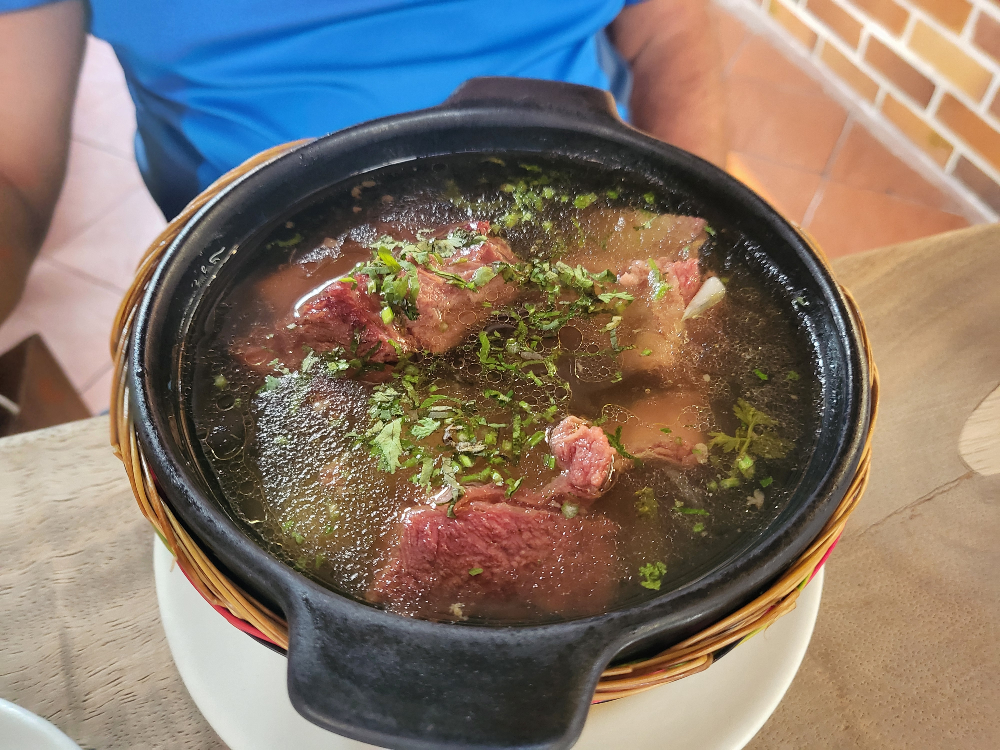

Caldo de Costilla (Beef Rib Soup)

This is the type of soup that we call "dead raiser", which usually means that it restores a person after a hangover,
but for me (still a minor at the moment), it just means that whenever I feel cold, hungry or ill, I know that just the smell
of this recipe is enough to take it away.
A Caldo the Costilla is not just any beef rib soup, is one of the lesser-known colombian breakfasts and, in my opinion,
one of the most traditional ones.
Ingredients (per person)
- 200 g of beef short ribs (only the meat, not the bones)
- 100 g of potatoes
- A handful of fresh cilantro
- 20 g of celery stalks
- 20 g of parsley
- 2 cloves of garlic
- 1/4 of a green onion
- 2 teaspoons of salt
- Water
Steps
- Slice the ribs into thin strips; peel the potatoes and mince half of the cilantro, the garlic, celery and green onion
- Fill a pressure cooker with water and add the sliced ribs and minced herbs
- Bring to a boil for 20 minutes
- Add the potatoes and the salt and cook for another 5 minutes
- Serve the soup
- Chop roughly and sprinkle the remaining cilantro
To come back click here